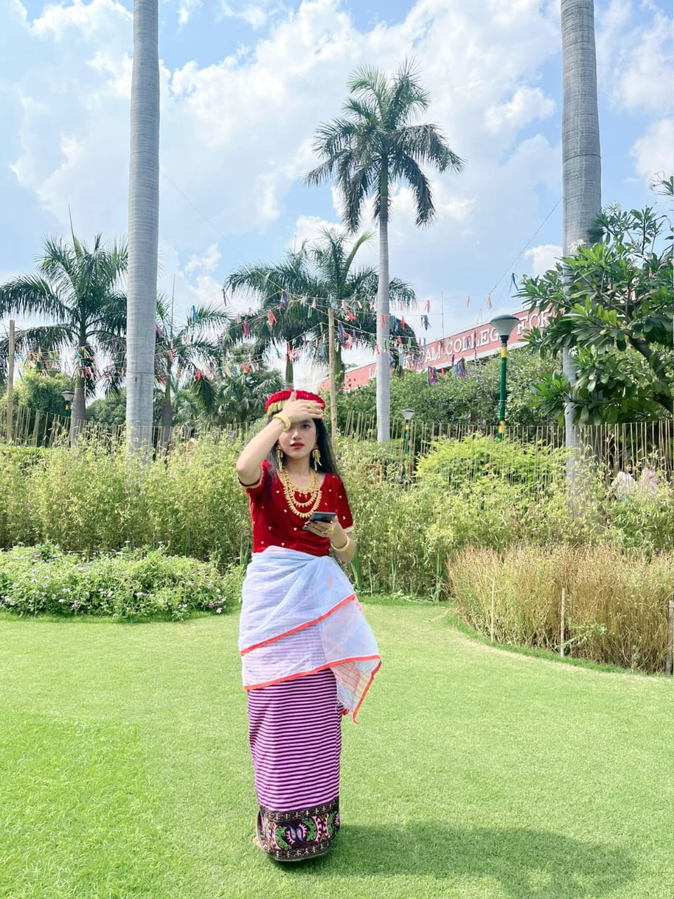

MANGALLEIBI KONGBAM

2nd Year , BA. Hons. Political Science
Lady Shree Ram College for Women, University of Delhi
EDUCATIONAL QUALIFICATIONS:
| EXAMINATION/COURSE |
INSTITUTION |
RESULT |
YEAR OF PASSING |
B.A.(Honours) Political
Science |
Lady Shree Ram College
for Women, Univaersity of
Delhi |
1st Semester-
8.09 SGPA
2nd Semester-
8.45 SGPA |
2023 |
| AISSCE |
The Eden Public School, Imphal, Manipur |
95% (Humanities) |
2022 |
| AISSE |
The Eden Public School, Imphal, Manipur |
89.6% |
2020 |
- Received One-Year Freeship award for the year 2022-23, given by the Alumni Association of Lady Shri Ram College for Women.
- Received ‘N. Thoithoiba Meritorious Award’ from school for securing the highest percentage in AISSCE
ACADEMIC RESEARCH:
- Conducted a field survey and wrote a research paper on ‘Socialization of children in Joint vs Nuclear Family’.
- Wrote a research paper on "Gender Representation and Women's Role in Conflict Resolution: Enhancing Peacebuilding in International Relations" with my team members under the supervision of Dr. Rina, Associate Professor, Department of Political Science.
HOBBIES:
Reading novels, cooking, listening to music, travelling, singing and dancing.
SKILLS:
MS Word, MS Excel, Canva, Team management, Budget management, Event management.
LANGUAGES:
Manipuri, English and Hindi
SOCIAL WORK AND EXTRA CURRICULAR ACTIVITIES:
- College representative of a Manipuri youth organization based at Delhi called Maiyond (Manipuri Innovative Youth Organisation, Delhi).
- Core team member of the North-East Cell of LSR.
- Member of MitSna.